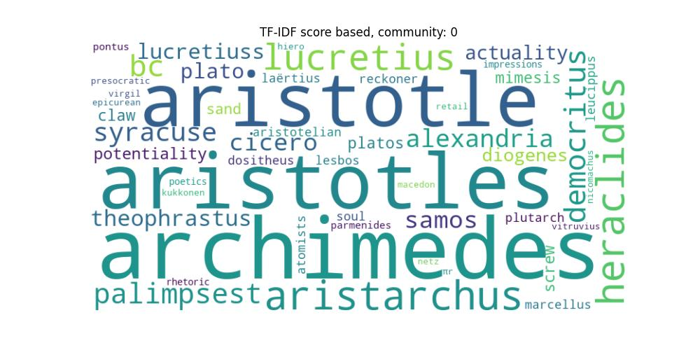
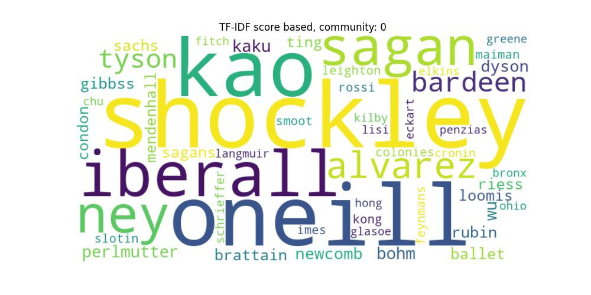
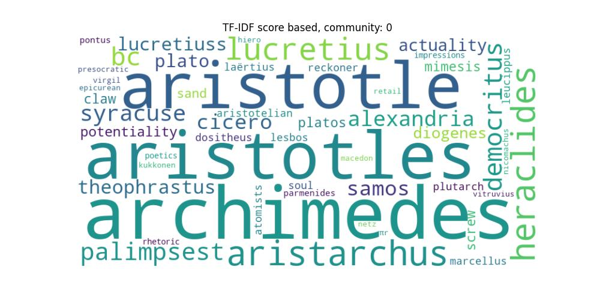
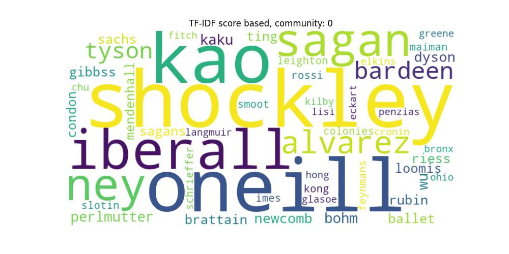

NETWORK ANALYSIS
On this website, we've created three interactive sliders, each providing insights into the physicist community and its development over time.
The first slider displays the connections between physicists from B.C. until the year 2000, ultimately revealing the complete network graph of all connections sourced from Wikipedia.
The second slider features three distinct plots. The first plot illustrates the network connections during a specific time period.
The second plot presents a word cloud generated through TF-IDF analysis from the Wikipedia pages of the physicists in the graph.
Lastly, the third plot showcases a word cloud with the most descriptive terms from the physicists' Wikipedia pages, as summarized by ChatGPT.
Finally, the third slider is similar to the second slider, but instead of focusing on time periods, it examines communities based on the countries of origin for the physicists.
Obs. ChatGPT was not able to greate all wordclouds from all the communities.

 


